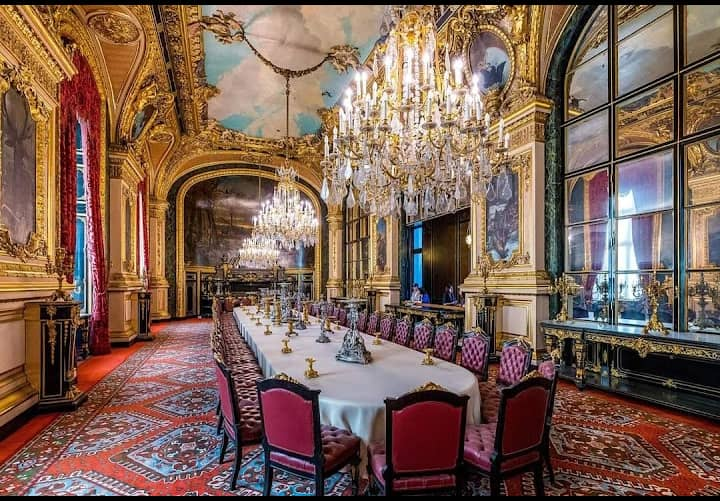

Paris,capitale de la France,est une grande ville européenne et un centre mondil de l'art, de la mode, de la gastronomie et de la culture.Son paysage urbain du
XIXe siècle est traversé par de larges boulevards et la Seine. outre les monuments comme la Tour Eiffel, le musée du Louvre et la Cathedrale gothique Notre-Dame
la ville est reputée pour ses cafés et ses boutiques de luxe bordant la rue du Faubourg-Saibt-Honoré.Elle s'ettend sur une superfie de 105,4KM² avec 2,161millions
d'habitants.
La tour Eiffel edst une tour en fer puddlé de 324mètres de hauteur et située à l'extrémité nord-ouest du parc du Champ-de-Mars en bordure de la Seine.
Construite en deux ans par Gustave Eiffel et ses collaborateurs. Elle est devenue le symbole de la capitale française et un site touristique de premier plan.
Depuis son ouverture au public, elle a accueilli plus de 300 millions de visiteurs.
Le musée du Louvre est située dans le premier arrondissement de Paris. Cré le 10 Août 1793 par les architectes Pierre Lescot, Louis Le Vau, Claude Perrault, est le
lieu de la presentation des chefs-d'oeuvre de la collection du couronne. D'ailleurs, il fut le lieu d'exposition du tableau du celebre artiste Leonad de Vinci "La Joconde ou
Portrait de Mona Lisa" qui represente un portrait mi-corps, probablement celui de la Florentine Lisa Gherardini, epouse de Francesco del Giocondo.

La cathedrale Notre-Dame, communement appelée Notre-Dame, est l'un des monuments les plus emblématiques de Paris et de la France. Elle est situéesur l'île de la cité et
est un lieu de culte catholique,siége de l'archidiocèse de Paris, dédiée à la Vierge Marie.La construction de la cathédrale de Notre Dame de Paris a commencé entre 1 160 et 1163. C'est l'évêque Maurice de Sully qui est à l'origine du chantier et qui dirigera les travaux. Cependant, rien n'indique s'il s'agit de son initiative personnelle, celle des chanoines ou du pouvoir royal. La plupart des architectes qui ont participé au chantier sont anonymes. << Les premiers noms connus comme ceux de Pierre de Montreuil, Jean de Chelles ou Jean Ravy n'apparaissent qu'entre le XIII et le XIV siècle », explique Claude Gauvard, historienne médiéviste à l'université Paris 1 Panthéon Sorbonne.
Une plaque de bronze incrustée dans le sol de son parvis sert de point zéro de toutes les distances routières calculées à partir de paris. D'autre part, la cathédrale constitue pour l'IGN un site NTF d'ordre 5, sa flèche étant un point géodésique, c'est à-dire qu'on connaît avec précision ses coordonnées géographiques.
Lundi 18 avril, vers 18h 50, un feu a détruit partiellement la cathédrale Notre-Dame de Paris, faisant naître une grande émotion en France et partout dans le monde. La flèche et une grande partie de la toiture du joyau gothique et emblème de la capitale ont disparu dans les flammes. Toute la nuit, plus de 400 pompiers ont lutté pour limiter les dommages, et sauver le trésor et les oeuvres d'art qui s'y trouvaient. Dès les premières heures, des promesses de dons ont afflué pour la reconstruction de la cathédrale. Avec cet incendie, c'est un monument de notre histoire nationale depuis 850 ans, inscrit au patrimoine mondial de l'humanité de 1991, et le plus visité de France qui est touché.
Si le repas gastronomique français est classé depuis 2010 au patrimoine culturel immatériel mondial de l’Unesco, Paris est bien le meilleur endroit pour le déguster ! La ville se dévoile aussi à travers une cuisine qui se veut plus moderne, ouverte, créative, innovante, inspirée du grand mouvement parisien, le Fooding®. De l’essor de la street-food à la l’engouement pour
les restaurants pluridisciplinaires, les tendances actuelles en matière d’art de vivre sont multiples dans la capitale. L’offre culinaire, en renouvellement constant, demeure à la fois pointue et innovante. Dîner dans un mini-restaurant ou dans une épicerie, assister au spectacle des chefs en train de cuisiner, se laisser guider par un menu unique, ou encore apprendre à côté des chefs étoilés, il existe de multiples façons d’exercer sa gourmandise à Paris.
Toutes ces merveilles vous attendent sur PARIS et nul part ailleurs!!